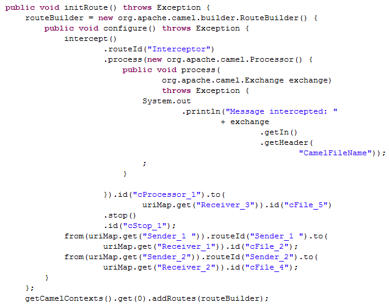

Famille de composant | Exception | |
Fonction | Le composant cIntercept intercepte les messages dans toutes les sous-routes d'une Route avant leur production et les dirige dans une seule nouvelle sous-route sans modifier les valeurs originales. Lorsque le détour est effectué, le routage des messages vers leurs endpoints cible originaux peut continuer. | |
Objectif | Le cIntercept intercepte chaque message d'une sous-route et le redirige vers une autre sous-route sans modifier la sous-route originale. Cela peut être utile lors de tests pour simuler la gestion d'erreurs. | |
Utilisation | Le cIntercept est généralement utilisé comme composant de début dans une sous-route. | |
Connections | Row / Route | Sélectionnez le lien Route pour intercepter tous les messages de toutes les sous-routes écoutées par le cIntercept. |
| Trigger / When | Sélectionnez le lien When pour filtrer les messages à intercepter et cliquez sur l'onglet Component. Dans la liste Type, sélectionnez le type de langage utilisé pour déclarer votre condition. Dans le champ Condition, saisissez la condition utilisée pour filtrer les messages. Tous les messages ne correspondant pas à cette condition sont rejetés, par défaut, ou peuvent être récupérés via un lien Otherwise vers un canal différent. |
Limitation | Pour ne pas modifier les sous-routes originales, le cIntercept peut être utilisé uniquement dans une sous-route séparée. | |
Dans ce scénario, les messages de deux sous-routes sont interceptés et routés dans une nouvelle sous-route, terminée avant que les sous-routes originales ne continuent.

Ce scénario requiert cinq composants cFile, un cIntercept, un cProcessor et un cStop.
De la famille Messaging dans la Palette, déposez quatre composants cFile dans l'espace de modélisation graphique.
Reliez les deux paires de cFile à l'aide de liens Row > Route. Les messages de ces deux sous-routes seront interceptés.
Du dossier Exception, déposez un cIntercept dans l'espace de modélisation graphique.
Du dossier Processor, déposez un composant cProcessor dans l'espace de modélisation graphique.
Du dossier Messaging, déposez un cinquième cFile dans l'espace de modélisation graphique.
Du dossier Miscellaneous, déposez un composant cStop dans l'espace de modélisation graphique.
Reliez ces quatre composants les uns aux autres à l'aide de liens Row > Route. Dans cette sous-route, les messages interceptés sont dirigés vers un nouvel endpoint avant que la Route entière soit achevée.
Renommez les composants afin de mieux identifier leur rôle dans la Route.
Dans ce scénario, le cIntercept intercepte tous les messages des sous-routes dès que les messages sont envoyés et qu'ils n'ont pas de propriété à configurer. Le composant cStop arrête la sous-route dans laquelle le message a été rejeté avant la fin du traitement et n'ayant pas de propriété à configurer. Vous devez donc configurer uniquement les messaging endpoints et les composants de monitoring.
Double-cliquez sur le cFile nommé Sender_1 pour afficher sa vue Basic settings dans l'onglet Component.

Dans le champ Path, spécifiez le chemin d'accès à la première source dont vous envoyez vos messages et laissez les autres paramètres tels qu'ils sont.
Double-cliquez sur le cFile nommé Receiver_1 pour afficher sa vue Basic settings.

Dans le champ Path, spécifiez le chemin d'accès à la première destination à laquelle vous envoyez des messages et laissez les autres paramètres tels qu'ils sont.
De la même façon, configurez les composants cFile nommés Sender_2 et Receiver_2 dans la seconde sous-route.
Double-cliquez sur le composant cProcessor nommé Monitor pour afficher sa vue Basic settings et personnalisez le code dans la zone Code pour afficher le nom des fichiers des messages interceptés, dans la console :
System.out.println("Message intercepted: "+ exchange.getIn().getHeader("CamelFileName"));Double-cliquez sur le composant cFile nommé Receiver_3 pour afficher sa vue Basic settings.

Dans le champ Path, spécifiez le chemin d'accès au fichier de destination pour les messages interceptés et laissez les autres paramètres tels qu'ils sont.
Appuyez sur Ctrl+S pour sauvegarder votre Route.
Cliquez sur l'onglet Code au bas de l'espace de modélisation graphique pour visualiser le code généré.
Comme affiché dans le morceau de code, le Interceptor intercepte tous les messages de la Route. Les messages interceptés sont dirigés vers (
.to) l'endpoint Receiver_3 et le cStop_1 termine le routage du message avant que les messages soient routés de l'(from)endpoint Sender_1 vers (.to) l'endpoint Receiver_1 et de l'(from) endpoint Sender_2 vers l'(.to) endpoint Receiver_2.Cliquez sur la vue Run et cliquez sur le bouton Run pour lancer l'exécution de votre Route. Vous pouvez également appuyer sur F6 pour l'exécuter.
Résultat : Les fichiers sont envoyés des endpoints, capturés par le composant cIntercept, monitorés par le cProcessor et envoyés vers un nouvel endpoint. Les sous-routes originales sont terminées avant que les fichiers atteignent leur endpoint cible d'origine.